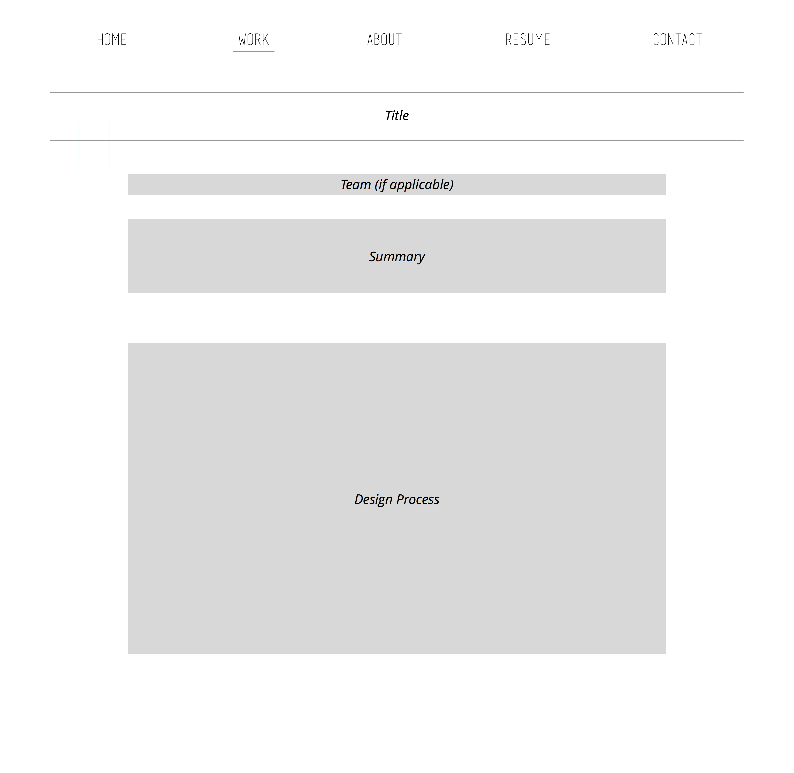
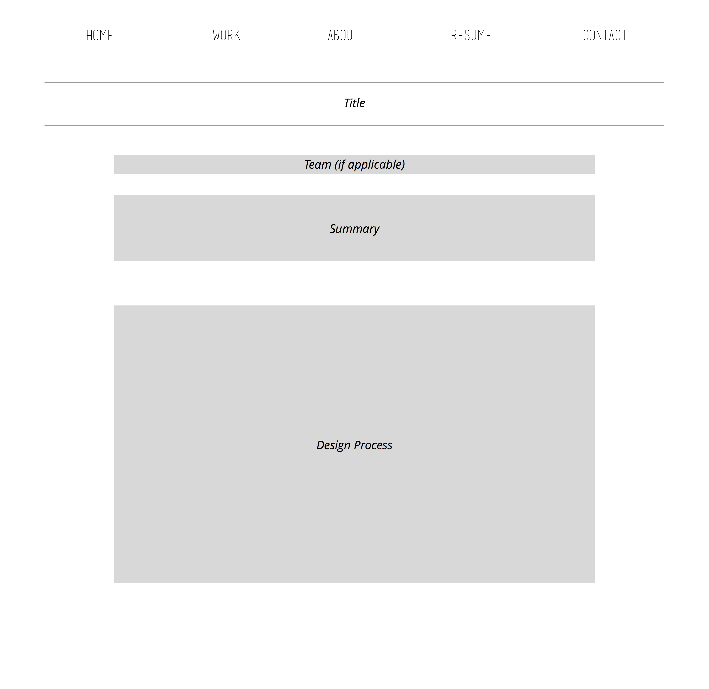

Personal Portfolio
I wanted to create an online, personal portfolio that showcased my projects. The initial iteration of my portfolio totalled approximately two weeks; the second iteration took about a week. I designed and coded the entire website.
Ideation
For my portfolio, I wanted to clearly convey my passion for UX design; showcase an interdisplinary set of skills; and prove that said skills were strong and showed further potential. Accordingly, I believed that the best way to accomplish the above was to implement a portfolio design that, in and of itself, was sleek in design, clearly depicted my projects, and was simple yet maintained individual character.
Before I began designing, I looked into other designers' portfolios to garner inspiration. Through this, I learned of the importance of keeping my portfolio clean, providing well-written case studies accompanied by design process visuals, and higlighting my interdisciplinary skills and experiences.

Before I began designing, I looked into other designers' portfolios to garner inspiration. Through this, I learned of the importance of keeping my portfolio clean, providing well-written case studies accompanied by design process visuals, and higlighting my interdisciplinary skills and experiences.
First Iteration
My initial iteration attempted to minimize design elements and create a modern look. I selected two symmetrical fonts, a green hue for emphasis, and a direct, place-and-show format for my projects. Accordingly, I drafted mid-fi mockups, which took up only about a day of the total time, on Sketch.

I took a bit over a week to implement everything in HTML, CSS, and JavaScript. Admittedly, upon completion of this iteration, I wasn't happy with the final product. The overall look was plain and underwhelming, and my projects were poorly explained. I decided I needed to rethink how I wanted my portfolio to look.
See V1 Git

I took a bit over a week to implement everything in HTML, CSS, and JavaScript. Admittedly, upon completion of this iteration, I wasn't happy with the final product. The overall look was plain and underwhelming, and my projects were poorly explained. I decided I needed to rethink how I wanted my portfolio to look.
See V1 Git
Second Iteration
For my second iteration, I decided I wanted my portfolio to maintain the traits I had decided upon during ideation. However, I also wanted to better showcase myself - who I am, what I've done, and what I hope to achieve. As such, I redesigned each of the pages, simplified the amount of items in the navigation, changed the color to better accomodate the artistic direction, and spent more time on each of my case studies. Though I can always make my portfolio better, I am certainly much prouder of and happier with this iteration.


The programming for this iteration went by much quicker, as I was more experienced and could recycle some of the code. I spent a heavy amount of time determining artistic direction and writing out my case studies.
See V2 Git
The programming for this iteration went by much quicker, as I was more experienced and could recycle some of the code. I spent a heavy amount of time determining artistic direction and writing out my case studies.
See V2 Git
Takeaway
While building my portfolio, I learned quite a number of things. First, manifesting a concept into reality is very interesting and also very difficult. Things don't always turn out the way you want to, and that's certainly okay. With that in mind, make sure you pace yourself so that you don't burn out when you go back to the drawing board. Second, put thought into how you want to organize your HTML, CSS, and JS files, as well as your other resources. There a lot of small details that will really impact your portfolio i.e. confusing CSS selectors, file extensions in the URL, etc.
See Other Projects